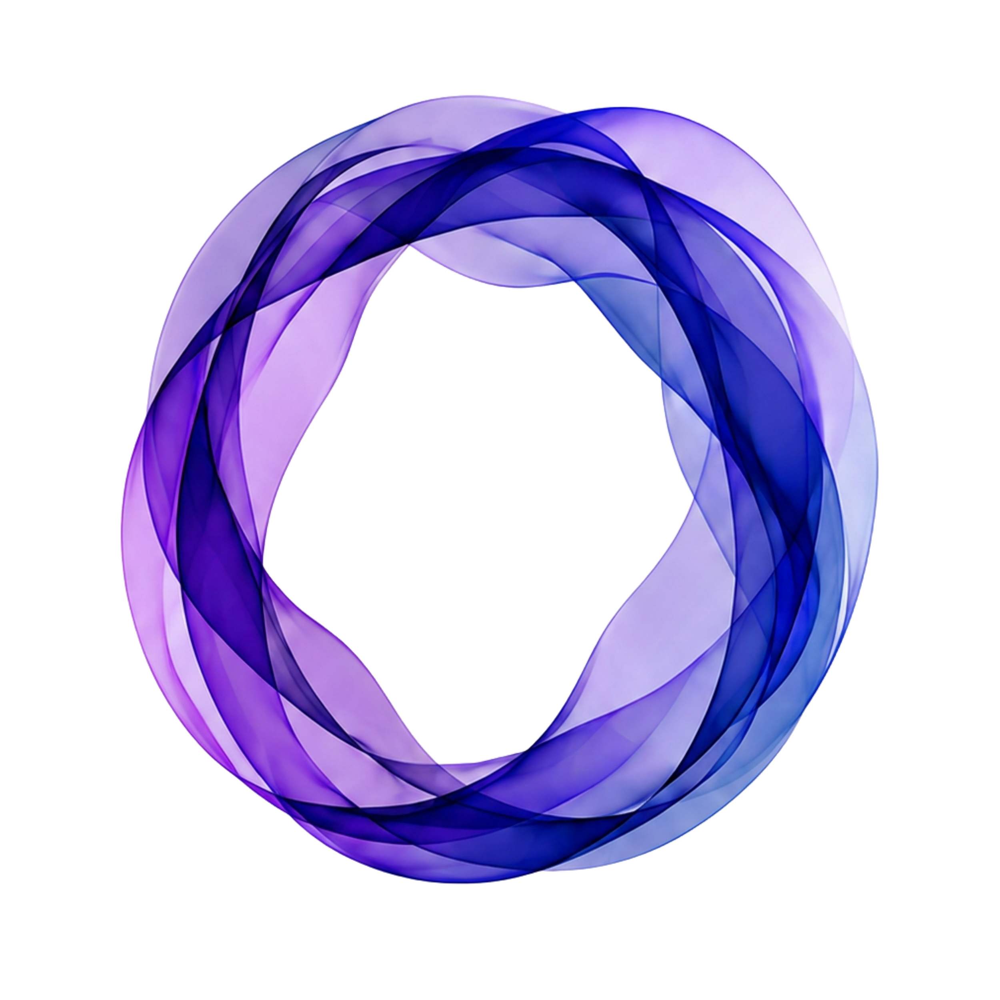

את לא צריכה לחפש
.
One מחפש בשבילך
.
בלי סווייפים. בלי לרדוף אחרי מאצ׳ים.
מכירים אותך לעומק,
מחפשים מאחורי הקלעים,
ופונים אלייך כשיש מישהי
שבאמת שווה להכיר.
הצטרפי ל-One
סוכן AI להיכרויות שעובד בשבילך.
meet, as you are
.
One